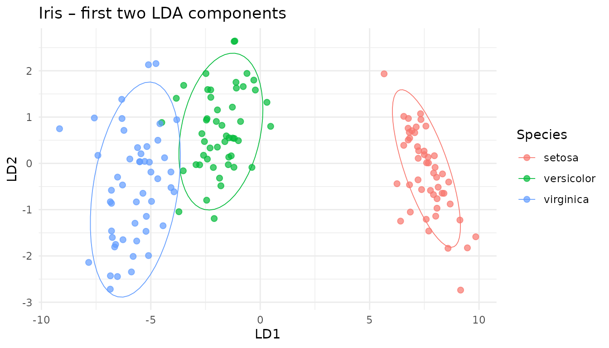
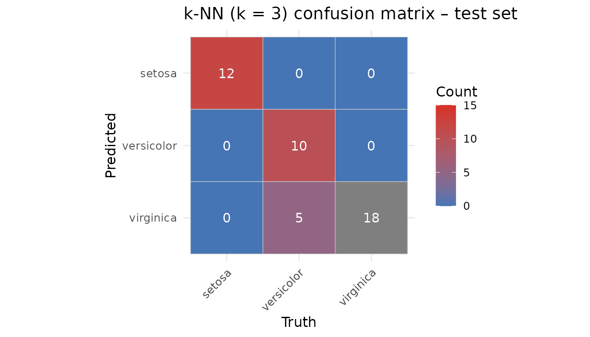

Classifying in latent space: k-NN & Random-Forest wrappers
Classifier.Rmd1. Why classify after projection?
Once a dimensionality-reduction model (PCA, PLS, CCA, …) is fitted, every new sample can be projected into the low-dimensional latent space. Running a classifier there – instead of on thousands of noisy raw variables – yields
- fewer parameters & smaller models,
- immunity to collinearity,
- freedom to use partial data (ROI, missing sensors),
- a clean separation between unsupervised decomposition and supervised prediction.
The classifier() S3 family supplied by
multiblock provides that glue: you hand it any projector
(or multiblock_biprojector,
discriminant_projector, …) plus class labels → it returns a
ready predictor object.
2. Iris demo – LDA → discriminant_projector → k-NN
data(iris)
X <- as.matrix(iris[, 1:4])
grp <- iris$Species
# Fit classical Linear DA and wrap it
if (!requireNamespace("MASS", quietly = TRUE)) {
stop("MASS package required for LDA example")
}
# 1. Define and fit the pre-processing step using the training data
preproc_fitted <- fit(center(), X)
# 2. Transform the data
Xp <- transform(preproc_fitted, X)
# Assuming discriminant_projector, prep, center, scores are available
lda_fit <- MASS::lda(X, grouping = grp)
disc_proj <- multivarious::discriminant_projector(
v = lda_fit$scaling, # loadings (p × d)
s = Xp %*% lda_fit$scaling, # scores (n × d)
sdev = lda_fit$svd, # singular values
labels = grp,
preproc = preproc_fitted # Pass the fitted pre-processor
)
print(disc_proj)
#> Projector object:
#> Input dimension: 4
#> Output dimension: 2
#> With pre-processing:
#> A finalized pre-processing pipeline:
#> Step 1 : center
#> Label counts:
#> setosa versicolor virginica
#> 50 50 502.1 Visualise the latent space
scores_df <- as_tibble(scores(disc_proj)[, 1:2],
.name_repair = ~ c("LD1","LD2")) |>
mutate(Species = iris$Species)
ggplot(scores_df, aes(LD1, LD2, colour = Species)) +
geom_point(size = 2, alpha = .7) +
stat_ellipse(level = .9, linewidth = .3) +
theme_minimal() +
ggtitle("Iris – first two LDA components")
2.2 Build a k-NN classifier on the latent scores
set.seed(42)
train_id <- sample(seq_len(nrow(X)), size = 0.7*nrow(X))
test_id <- setdiff(seq_len(nrow(X)), train_id)
# Assuming classifier function is available
clf_knn <- multivarious::classifier(
x = disc_proj,
labels = grp[train_id],
new_data= X[train_id, ], # Use training data to get reference scores
knn = 3
)
print(clf_knn)
#> k-NN Classifier object:
#> k-NN Neighbors (k): 3
#> Number of Training Samples: 150
#> Number of Classes: 3
#> Underlying Projector Details:
#> Projector object:
#> Input dimension: 4
#> Output dimension: 2
#> With pre-processing:
#> A finalized pre-processing pipeline:
#> Step 1 : center
#> Label counts:
#> setosa versicolor virginica
#> 50 50 502.3 Predict and evaluate
pred_knn <- predict(clf_knn, new_data = X[test_id, ],
metric = "cosine", prob_type = "knn_proportion")
head(pred_knn$prob, 3)
#> setosa versicolor virginica
#> [1,] 1 0 0
#> [2,] 1 0 0
#> [3,] 1 0 0
print(paste("Overall Accuracy:", mean(pred_knn$class == grp[test_id])))
#> [1] "Overall Accuracy: 0.888888888888889"
# Assuming rank_score and topk are available
rk <- rank_score(pred_knn$prob, grp[test_id])
tk2 <- topk (pred_knn$prob, grp[test_id], k = 2)
tibble(
prank_mean = mean(rk$prank),
top2_acc = mean(tk2$topk)
)
#> # A tibble: 1 × 2
#> prank_mean top2_acc
#> <dbl> <dbl>
#> 1 0.278 12.4 Confusion-matrix on the test set
cm <- table(
Truth = grp[test_id],
Predicted = pred_knn$class
)
# Heat-map
cm_df <- as.data.frame(cm)
ggplot(cm_df, aes(Truth, Predicted, fill = Freq)) +
geom_tile(colour = "grey80") +
geom_text(aes(label = Freq), colour = "white", size = 4) +
scale_fill_gradient(low = "#4575b4", high = "#d73027", name="Count", limits = c(0, 15)) +
scale_y_discrete(limits = rev(levels(cm_df$Predicted))) +
theme_minimal(base_size = 12) + coord_equal() +
ggtitle("k-NN (k = 3) confusion matrix – test set") +
theme(axis.text.x = element_text(angle = 45, hjust = 1))
# Pretty table as well
knitr::kable(cm, caption = "Confusion matrix (counts)")| setosa | versicolor | virginica | |
|---|---|---|---|
| setosa | 12 | 0 | 0 |
| versicolor | 0 | 10 | 5 |
| virginica | 0 | 0 | 18 |
3. Random-Forest on the same latent space
# Check if randomForest is installed
if (requireNamespace("randomForest", quietly = TRUE)) {
# Assuming rf_classifier.projector method is available
rf_clf <- rf_classifier( # Using the generic here
x = disc_proj,
labels = grp[train_id],
# Pass scores directly if method requires it, or let it call scores(x)
scores = scores(disc_proj)[train_id, ]
)
pred_rf <- predict(rf_clf, new_data = X[test_id, ])
print(paste("RF Accuracy:", mean(pred_rf$class == grp[test_id])))
} else {
cat("randomForest package not installed. Skipping RF example.\n")
}
#> [1] "RF Accuracy: 0.977777777777778"The RF sees exactly three input variables (the LDA components) – that keeps trees shallow and speeds-up training.
4. Partial-feature prediction: sepal block only
Assume that in deployment we measure only Sepal variables (cols 1–2). A partial projection keeps the classifier happy:
sepal_cols <- 1:2
# Create a classifier using reference scores from Sepal columns only
clf_knn_sepal <- multivarious::classifier(
x = disc_proj,
labels = grp[train_id],
new_data= X[train_id, sepal_cols], # Use training data subset
colind = sepal_cols, # Indicate which columns were used
knn = 3
)
# Predict using the dedicated sepal classifier
pred_sepal <- predict(
clf_knn_sepal, # Use the sepal-specific classifier
new_data = X[test_id, sepal_cols]
# No need for colind here as clf_knn_sepal expects sepal data
)
print(paste("Accuracy (Sepal only):", mean(pred_sepal$class == grp[test_id])))
#> [1] "Accuracy (Sepal only): 0.333333333333333"Accuracy drops a bit – as expected when using fewer features.
5. Which component block matters most?
feature_importance() can rank variable groups via a
simple “leave-block-out” score drop.
blocks <- list(
Sepal = 1:2,
Petal = 3:4
)
# Assuming feature_importance is available
fi <- feature_importance(
clf_knn,
new_data = X[test_id, ],
true_labels = grp[test_id], # Pass the correct test set labels
blocks = blocks,
fun = rank_score, # Use rank_score as the performance metric
fun_direction = "lower_is_better",
approach = "marginal" # Calculate marginal drop when block is removed
)
print(fi)
#> block importance
#> 2 3,4 0.3555556
#> 1 1,2 0.1333333